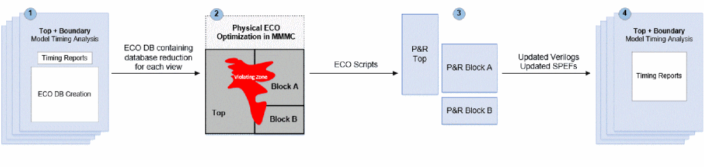
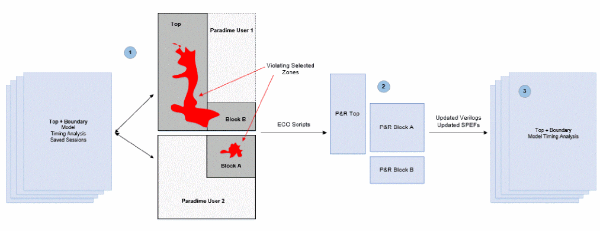

Hierarchical Top+Boundary Model ECO Flow
The Hierarchical Top+Boundary Model ECO flow can be used for performing timing and power closure over interface paths, while loading lower-level models/blocks and closing a higher-level module/block. This flow analyzes the design hierarchically using boundary constraints at the top level, thus allowing faster and efficient timing analysis. It also reduces memory usage and runtime significantly on larger designs.
When the High Capacity ECO (HC-ECO) flow with Top+BM is used, the timing_enable_boundary_model_eco command is applied before the boundary model is generated and loaded. This is done to ensure that boundary model can be used for ECO. For the analysis part of the boundary model, refer Boundary Models.
Based on the user-defined settings, the Top+BM database is optimized using any of the following methods:
- Reduction based on the timing violations seen during Top+BM STA session (Setup/Hold/DRV).
- Reduction based on the list of partitions to be optimized for inter_partition timing paths.
- Reduction based on the user-defined path groups and a list of DRV violated nets or pins.
To use this flow, Tempus ECO follows two approaches as mentioned below:
Top+BM HC-ECO Using Two Sessions Flow
Using this approach, the tool:
- Performs DRV+Setup+Hold timing closure on the violating zone.
- Performs Top+BM timing closure using High Capacity ECO:
The figure below describes the different flow steps required for a higher-level module STA with lower-level models loaded for ECO DB generation, ECO physical-aware timing/power closure, ECO implementation at block and top only levels, and final STA with the implemented ECO.
Figure -10 Top+BM HC-ECO (Using Two Sessions Flow)

Top+BM HC-ECO Using Paradime Environment
Using this approach, the tool:
- Performs DRV+Setup+Hold timing closure on violating zone.
-
Performs Top+BM timing closure using High Capacity ECO inside Paradime.
Figure -11 Top+BM HC-ECO (Using Paradime)

- Step 1: Start Paradime with physical data on saved sessions and choose the specific part of the design to focus on. This is either top only or partitions or path_groups, or endpoints, and so on.
- Step 2: Implement ECOs independently at top level and block level in P&R tool.
- Step 3: Run Top+BM final timing analysis.
To use the flow set up, below are the templates for the Two Sessions and Paradime flows:
The Two Sessions flow performs hold timing closure on a Top+BM database based on timing violations seen during STA. You can choose to enable either GBA or PBA mode.
The BM session can be SMSC, MMMC, or DMMMC:
set timing_full_context_flow 1
set timing_sum_cc_for_all_small_aggressors 1
set timing_write_aggressors_to_disk 1
set timing_enable_model_accurate_nef 1
set timing_enable_filter_fanin_cone 1
timing_enable_boundary_model_eco
…
create_boundary_model -overwrite -no_extended_fanin \-latch_effort_low -skip_constants -exclude_no_delay_port \ -dir BM_${BlockName}_${view} -overwrite
The Top+BM session can be SMSC, MMMC, or DMMMC.
timing_enable_boundary_model_eco
<load_Top+BM_design>
set_eco_opt_mode -enable_high_capacity_eco true
set_eco_opt_mode -save_eco_opt_db HC-ECO-DB
set_power_analysis_mode -dynamic_power_view setup_ss_1p170v
set_eco_opt_mode -save_eco_opt_db HC-ECO-DB
write_eco_opt_db
The ECO DB directory must be provided in the script before the design is loaded:
set_multi_cpu_usage -localCpu 32 set_eco_opt_mode -load_eco_opt_db HC-ECO-DB read_lib -lef {../libs/lef/FreePDK45_lib_v1.0.lef\ ../libs/MACRO/LEF/pllclk.lef \ ../libs/MACRO/LEF/ram_256X16A.lef \ ../libs/MACRO/LEF/rom_512x16A.lef }
read_view_definition viewDefinition.tcl
read_verilog “top.v blockA.v blockB.v”
set_top_module top
set_filler_mode <options>
merge_hierarchical_def top.def blockA.def blockB.def
<load SPEFs>
set_eco_opt_mode -partition_list_file partition.txt
set_eco_opt_mode -optimize_replicated_modules true
eco_opt_design -hold
The Two Sessions flow performs the inter-partition Hold timing closure on a Top+BM database based on a user-defined partition during STA. The boundary model generation flow will remain the same as specified in Template 1.
The Top+BM session can be SMSC, MMMC, or DMMMC:
timing_enable_boundary_model_eco
<load_Top+BM_design>
set_eco_opt_mode -enable_high_capacity_eco true
set_eco_opt_mode -inter_partition {blockA blockB}
set_eco_opt_mode -intra_partition {}
set_eco_opt_mode -save_eco_opt_db HC-ECO-DB
set_power_analysis_mode -dynamic_power_view setup_ss_1p170v
set_eco_opt_mode -save_eco_opt_db HC-ECO-DB
write_eco_opt_db
The ECO DB directory must be provided in the script before the design is loaded.
set_multi_cpu_usage -localCpu 32 set_eco_opt_mode -load_eco_opt_db HC-ECO-DB read_lib -lef {../libs/lef/FreePDK45_lib_v1.0.lef\ ../libs/MACRO/LEF/pllclk.lef \ ../libs/MACRO/LEF/ram_256X16A.lef \ ../libs/MACRO/LEF/rom_512x16A.lef }
read_view_definition viewDefinition.tcl
read_verilog “top.v blockA.v blockB.v”
set_top_module top
set_filler_mode <options>
merge_hierarchical_def top.def blockA.def blockB.def
<load SPEFs>
set_eco_opt_mode -inter_partition {blockA blockB}
set_eco_opt_mode -intra_partition {}
set_eco_opt_mode -partition_list_file partition.txt
set_eco_opt_mode -optimize_replicated_modules true
eco_opt_design -hold
The same template can be used to perform inter-partition power recovery.
The Two Sessions flow performs DRV, Setup, Hold timing closure on a Top+BM database based on the user-defined Setup/Hold path_groups, and a list of DRV pins during STA. The boundary model generation flow will remain the same as specified in Template 1.
The Top+BM session can be SMSC, MMMC, or DMMMC.
timing_enable_boundary_model_eco
<load_Top+BM_design>
<TCL script which creates mySetupPG and myHoldPG path_groups>
set_eco_opt_mode -enable_high_capacity_eco true
set_eco_opt_mode -include_setup_path_groups {mySetupPG}
set_eco_opt_mode -include_hold_path_groups {myHoldPG}
set_eco_opt_mode -select_drv_pin_file {myDRVPinList.txt}
set_eco_opt_mode -save_eco_opt_db HC-ECO-DB
set_power_analysis_mode -dynamic_power_view setup_ss_1p170v
set_eco_opt_mode -save_eco_opt_db HC-ECO-DB
write_eco_opt_db
The ECO DB directory must be provided in the script before the design is loaded.
set_multi_cpu_usage -localCpu 32 set_eco_opt_mode -load_eco_opt_db HC-ECO-DB read_lib -lef {../libs/lef/FreePDK45_lib_v1.0.lef\ ../libs/MACRO/LEF/pllclk.lef \ ../libs/MACRO/LEF/ram_256X16A.lef \ ../libs/MACRO/LEF/rom_512x16A.lef }
read_view_definition viewDefinition.tcl
read_verilog “top.v blockA.v blockB.v”
set_top_module top
set_filler_mode <options>
merge_hierarchical_def top.def blockA.def blockB.def
<load SPEFs>
set_eco_opt_mode -include_setup_path_groups {mySetupPG}
set_eco_opt_mode -include_hold_path_groups {myHoldPG}
set_eco_opt_mode -select_drv_pin_file {myDRVPinList.txt}
set_eco_opt_mode -partition_list_file partition.txt
set_eco_opt_mode -optimize_replicated_modules true
eco_opt_design –drv; eco_opt_design –setup; eco_opt_design -hold
The Paradime flow performs hold timing closure on a Top+BM database based on the timing violations from the Top+BM STA clients. You can choose to enable either GBA or PBA mode. The boundary model generation flow will remain the same as specified in Template 1.
The STA saved session can be SMSC or MMMC.
timing_enable_boundary_model_eco
<load_Top+BM_design>
save_design view1.enc
setDistributeHost -local -timeout 10000 set_multi_cpu_usage -localCpu 24 -remoteHost 4 -cpuPerRemoteHost 4 set_distribute_mmmc_mode -eco true set_distribute_mmmc_mode -merge_view_definitions set_distribute_mmmc_mode -enable_high_capacity_eco set eco_setup_view_list {setup_1v setup_2v setup_3v setup_4v} set eco_hold_view_list {hold_1v hold_2v hold_3v hold_4v} set eco_dynamic_view {setup_3v} ; set eco_leakage_view {setup_3v} set eco_lef_file_list “tech.lef std.lef ram_256X16A.lef" set eco_def_file_list “top.def blockA.def blockB.def " set_distribute_mmmc_mode -set_filler_mode {-corePrefix FILL} set_eco_opt_mode -optimize_replicated_modules true distribute_read_design -restore_design all -restore_dir \ STA_211/ -outdir reports_Paradime
set_eco_opt_mode -partition_list_file partition.txt
eco_opt_design -hold
The Paradime flow performs inter-partition Hold timing closure on a Top+BM database based on the user-defined partitions. The boundary model generation flow will remain the same as specified in Template 1.
The STA saved session can be SMSC or MMMC. The same template can be used to perform inter-partition Power recovery.
timing_enable_boundary_model_eco
<load_Top+BM_design>
save_design view1.enc
setDistributeHost -local -timeout 10000 set_multi_cpu_usage -localCpu 24 -remoteHost 4 -cpuPerRemoteHost 4 set_distribute_mmmc_mode -eco true set_distribute_mmmc_mode -merge_view_definitions set_distribute_mmmc_mode -enable_high_capacity_eco set_eco_opt_mode -inter_partition {blockA blockB} set_eco_opt_mode -intra_partition {} set eco_setup_view_list {setup_1v setup_2v setup_3v setup_4v} set eco_hold_view_list {hold_1v hold_2v hold_3v hold_4v} set eco_dynamic_view {setup_3v} ; set eco_leakage_view {setup_3v} set eco_lef_file_list “tech.lef std.lef ram_256X16A.lef" set eco_def_file_list “top.def blockA.def blockB.def " set_distribute_mmmc_mode -set_filler_mode {-corePrefix FILL} set_eco_opt_mode -optimize_replicated_modules true distribute_read_design -restore_design all -restore_dir \ STA_211/ -outdir reports_Paradime
set_eco_opt_mode -partition_list_file partition.txt
eco_opt_design -hold
The Paradime flow performs DRV, Setup, Hold timing closure on a Top+BM database based on the user-defined Setup/Hold path_groups, and a list of DRV pins. The boundary model generation flow will remain the same as specified in Template 1.
The STA saved session can be SMSC or MMMC.
timing_enable_boundary_model_eco
<load_Top+BM_design>
save_design view1.enc
setDistributeHost -local -timeout 10000 set_multi_cpu_usage -localCpu 24 -remoteHost 4 -cpuPerRemoteHost 4 set_distribute_mmmc_mode -eco true set_distribute_mmmc_mode -merge_view_definitions set_distribute_mmmc_mode -enable_high_capacity_eco set_eco_opt_mode -path_group_file_name {TCL script which creates mySetupPG and myHoldPG path_groups} set_eco_opt_mode -include_setup_path_groups {mySetupPG} set_eco_opt_mode -include_hold_path_groups {myHoldPG} set_eco_opt_mode -select_drv_pin_file {myDRVPinList.txt} set eco_setup_view_list {setup_1v setup_2v setup_3v setup_4v} set eco_hold_view_list {hold_1v hold_2v hold_3v hold_4v} set eco_dynamic_view {setup_3v} ; set eco_leakage_view {setup_3v} set eco_lef_file_list “tech.lef std.lef ram_256X16A.lef" set eco_def_file_list “top.def blockA.def blockB.def " set_distribute_mmmc_mode -set_filler_mode {-corePrefix FILL} set_eco_opt_mode -optimize_replicated_modules true distribute_read_design -restore_design all -restore_dir \ STA_211/ -outdir reports_Paradime
set_eco_opt_mode -partition_list_file partition.txt
eco_opt_design –drv; eco_opt_design –setup; eco_opt_design -hold
Related Topics
Return to top